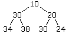
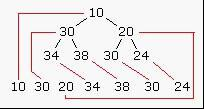

二叉堆对A星寻路的优化
这里讲解的二叉堆，其实是以堆的形式存在的二叉树，这个特殊的结构把A*算法对开启列表的排序需求演绎的出神入化，毫无疑问是A*的最佳拍档。
A*算法中最缓慢的部分就是在开启列表中寻找F值最低的节点或者方格。取决于地图的大小，你可能有十几，成百甚至上千的节点需要在某个时候使用A*搜索。无需多讲，反复搜索这么大的列表会严重拖慢整个过程。然而，这些时间在极大程度上受你存储列表的方式影响。
有序和无序的开启列表：简单的方法
最简单的方法就是顺序存储每个节点，然后每次需要提取最低耗费元素的时候都遍历整个列表。这提供可快速的插入速度，但是移除速度可能是最慢的，因为你需要检查每个元素才能够确定哪个才是F值最低的。
通常你可以保持你列表处于有序状态来提升效率。这花费了稍微多一点的预处理时间，因为你每次插入新元素都必须把他们放在恰当的位置。不过移除元素倒是很快。你只要移除第一个元素就可以了，它一定是F值最低的。
有很多方法可以保持你的数据有序（选择排序，冒泡排序，快速排序，等等）并且你可以用你最熟悉的搜索引擎找到这方面的文章。不过我们至少可以先提几种想法。最简单的方法可能是，当你需要添加新元素的时候，从列表开始的地方，依次比较每个元素的F值和要插入的F值的大小。一旦找到一个相等或者更高的F值，你就可以把新元素插入到列表中那个元素的前面。
这种方法可以通过保持列表中所有元素的平均值来得到改进，使用这个平均值来决定是从头（如上所说）还是从尾开始处理。总的说来，比平均F值低的新元素将被从头开始处理，而比平均F值高的则从末尾开始。这种方法可以节省一半的时间。
复杂一些，但是更快的方法是把这一想法提高到新的层次使用快速排序，它基本上是从比较新元素和列表中间元素的F值开始。如果新元素的F值低，你接着把它和1/4处元素进行比较，如果还是更低你就比较它和1/8处的元素，如此这般，不断的折半你的列表并且比较，直到找到合适的位置。这个描述很简单，你可能会想到网上寻找快速排序的更多资料。这比至此描述的任何方法都快。
二叉堆
二叉堆和刚才说的快速排序很像，经常被那些苛求A*速度的人使用。二叉堆平均提高寻路速度2-3倍，对于包含大量节点的地图(也就是说100×100节点或者更多）效果更明显。友情提醒，然而二叉堆很难处理，除非你使用含有大量节点的地图，速度至关重要，否则不值得为它头痛。
在有序列表中，每个元素都按照由低到高或由高到低的顺序保存在恰当的位置。这很有用，但是还不够。事实上，我们并不关心数字127是否比128在更低的位置上。我们只是想让F值最低的元素能放在列表顶端以便容易访问。列表的其他部分即使是混乱的也不必在意。列表的其他部分只有在我们需要另一个F值最低的元素的时候，才有必要保持有序。
基本上，我们真正需要的是一个“堆”，确切的说，是个二叉堆。二叉堆是一组元素，其中最大或者最小（取决于需要）的元素在堆顶端。既然我们要寻找F值最小的元素，我们就把它放在堆顶端。这个元素有两个子节点，每个的F值等于，或者略高于这个元素。每个子节点又有两个子节点，他们又有和他们相等或略高的子节点。。。依次类推。
这里是一个堆可能的样子：

注意，F值最低的元素(10)在最顶端，第二低的元素(20)是它的一个子节点。可是，其后就没有任何疑问了。在这个特定的二叉堆里，第三低的元素是24，它离堆顶有两步的距离，它比30小，但是30却在左侧离堆顶一步之遥的地方。简单的堆放，其他的元素在堆的哪个位置并不重要，每个单独的元素只需要和它的父节点相等或者更高，而和它的两个子节点相比，更低或者相等，这就可以了。这些条件在这里都完全符合，所以这是个有效的二叉堆。
很好，你可能会想，这的确有趣，但是如何把它付诸实施呢？嗯，关于二叉堆的一个有趣的事实是，你可以简单的把它存储在一个一维数组中。
在这个数组中，堆顶端的元素应该是数组的第一个元素(是下标1而不是0)。两个子节点会在2和3的位置。这两个节点的4个子节点应该在4－7的位置。

总的来说，任何元素的两个子节点可以通过把当前元素的位置乘以2（得到第一个子节点）和乘2加1（得到第二个子节点）来得到。就这样，例如堆中第三个元素（数值是20）的两个子节点，可以在位置2*3 = 6和2*3 +1 = 7这两个位置找到。那两个位置上的数字非别是30和24，当你查看堆的时候就能理解。
你其实不必要知道这些，除了表明堆中没有断层之外知道这些没有任何价值。7个元素，就完整的填满了一个三层堆的每一层。然而这并不是必要的。为了让我们的堆有效，我们只需要填充最底层之上的每一行。最底层自身可以是任意数值的元素，同时，新的元素按照从左到右的顺序添加。这篇文章描述的方法就是这样做的，所以你不必多虑。
往堆中添加新元素
当我们实际在寻路算法中使用二叉堆的时候，还需要考虑更多，但是现在我们只是学习一下如何使用二叉堆。我跳过这部分以便更容易理解基本的东西。我会在文章后面的部分给出处理这一切的完整公式，但了解这些细节仍然十分重要。
大致的，为了往堆里添加元素，我们把它放在数组的末尾。然后和它在 当前位置/2 处的父节点比较，分数部分被圆整。如果新元素的F值更低，我们就交换这两个元素。然后我们比较这个元素和它的新父节点，在 （当前位置）/2 ，小数部分圆整，的地方。如果它的F值更低，我们再次交换。我们重复这个过程直到这个元素不再比它的父节点低，或者这个元素已经到达顶端，处于数组的位置1。
我们来看如何把一个F值为17的元素添加到已经存在的堆中。我们的堆里现在有7个元素，新元素将被添加到第8个位置。这就是堆看起来的样子，新元素被加了红色。
10 30 20 34 38 30 24 17
接下来我们比较它和它的父节点，在 8/2 也就是 4的位置上。位置4当前元素的F值是34。既然17比34低，我们交换两元素的位置。现在我们的堆看起来是这样的:
10 30 20 17 38 30 24 34
然后我们把它和新的父节点比较。因为我们在位置4，我们就把它和 4/2 = 2 这个位置上的元素比较。那个元素的F值是30。因为17比30低，我们再次交换，现在堆看起来是这样的：
10 17 20 30 38 30 24 34
接着我们比较它和新的父节点。现在我们在第二个位置，我们把它和 2/2 = 1，也就是堆顶端的比较。这次，17不比10更低，我们停止，堆保持成现在的样子。
从堆中删除元素
从堆中删除元素是个类似的过程，但是差不多是反过来的。首先，我们删除位置1的元素，现在它空了。然后，我们取堆的最后一个元素，移动到位置1。在堆中，这是结束的条件。以前的末元素被加了红色。
34 17 20 30 38 30 24
然后我们比较它和两个子节点，它们分别在位置(当前位置*2)和(当前位置* 2 + 1)。如果它比两个子节点的F值都低，就保持原位。反之，就把它和较低的子节点交换。那么，在这里，该元素的两个子节点的位置在 1 * 2 = 2和 1*2 + 1 = 3。显然，34不比任何一个子节点低，所以我们把它和较低的子节点，也就是17，交换。结果看起来是这样：
17 34 20 30 38 30 24
接着我们把它和新的子节点比较，它们在 2*2 = 4，和2*2 + 1 = 5的位置上。它不比任何一个子节点低，所以我们把它和较低的一个子节点交换（位置4上的30）。现在是这样：
17 30 20 34 38 30 24
最后一次，我们比较它和新的子节点。照例，子节点在位置 4*2 = 8和4*2+1 = 9的位置上。但是那些位置上并没有元素，因为列表没那么长。我们已经到达了堆的底端，所以我们停下来。
二叉堆为什么这么快？
现在你知道了堆基本的插入和删除方法，你应该明白为什么它比其他方法，比如说插入排序更快。假设你有个有1000个节点的开启列表，在一格有很多节点的相当大的地图上，这不是不可能（记住，即使是100×100的地图，上面也有10,000个节点）。如果你使用插入排序，从起点开始，到找到新元素恰当的位置，在把新元素插入之前，平均需要做500次比较。
使用二叉堆，你从底端开始，可能只要1－3次比较就能把新元素插入到正确的位置。你还需要9次比较用来从开启列表中移除一个元素，同时保持堆仍然有序。在A*中，你通常每次只需要移除一个元素(F值最低的元素)，在任意位置添加0到5个新节点(就像主文章里描述的2D寻路)。这总共花费的时间大约是同样数量节点进行插入排序的1%。差别随你地图的增大(也就是节点更多)呈几何增长。地图越小，就越没优势，这也是为什么你的地图和节点越少，二叉堆的价值就越低的原因。
顺便，使用二叉堆并不意味着你的寻路算法会快100倍。在下面还讲了一些棘手的问题。额外的，A*不仅仅是为开启列表排序。然而，根据我的经验，用二叉堆在大部分场合可以提高2－3倍的速度，更长的路径，速度提高的更多。
在堆中添加新元素(第二部分）
好，我们实际的把这种技术用在A*寻路的开启列表排序中。我们使用的技术和先前描述的大体相同。
我们添加到开启列表中的第一个元素，一般是起始节点，当我们往开启列表中添加新元素的时候，首先我们计算G，H和F值，然后把它添加到开启列表的底部，然后我们依次把它和父节点比较直到它到达正确的位置。这是这些操作的代码：
private final void addPointResize()
{
int last = open.length - 1;
while (last > 1)
{
int half = last>>1;
if(open[last][ID_F]>=open[half][ID_F])
{
break;
}
int tmp[] = open[last];
open[last] = open[half];
open[half] = tmp;
last >>= 1;
}
}
从堆中删除元素(第二部分)
无疑，我们不能只建立堆，当不需要的时候，我们也要从堆中删除元素。特别的，在A*寻路中，我们在检查和切换到关闭列表之后，从堆顶需要删除F值最低的元素。
如前所述，你从把末元素移动到堆顶开始，接着我们需要依次比较它和两个子节点的数值。如果它的F值更高，我们就把它和更低F值的子节点交换。然后我们把它和新的子节点比较（看它是否更低）。如果它的F值比两个子节点更高，我们把它和较低的一个交换。我们重复这个过程直到找到它的正确位置。
private final void removePointResize()
{
int last = open.length - 1;
open[1] = open[last];
open = resizeArray(open, last, -1);
last = open.length - 1;
int head = 1;
while((head<<1)+1 <= last)
{
int child1 = head<<1;
int child2 = child1+1;
int childMin = open[child1][ID_F]
就如在主文章中描述的，有时候你会发现现有的开启列表中的元素会改变。这种情况发生的时候，我们不必要取出这个元素重新来过。只要从当前位置开始，用它新的（更低的）F值和它的父节点比较。如果它的F值低到足以替换它的父节点，你就把它替换掉（不然你就会得到一个错误的堆，一切都完了）。一般，你使用和“在堆中添加新元素”的小节中相同的代码，并做额外处理如下：
private final void resetPointResize(int i)
{
int last = i;
while (last > 1)
{
int half = last>>1;
if(open[last][ID_F]>=open[half][ID_F])
{
break;
}
int tmp[] = open[last];
open[last] = open[half];
open[half] = tmp;
last >>= 1;
}
}
原地址